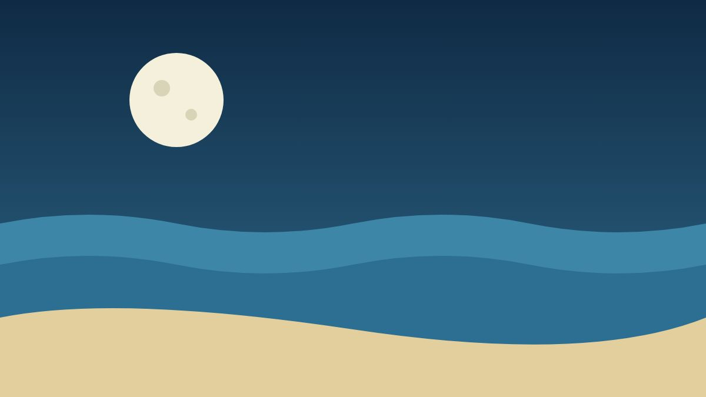

What Tides Owe the Moon

The moon pulls on the whole Earth, but it pulls harder on the near side than the far side. The difference stretches the oceans into two bulges, one facing the moon and one facing away, and the planet turns underneath them twice a day.
When the sun and the moon line up, their pulls add together and the tides run high and low: spring tides. When they pull at right angles, the range shrinks to neap tides.